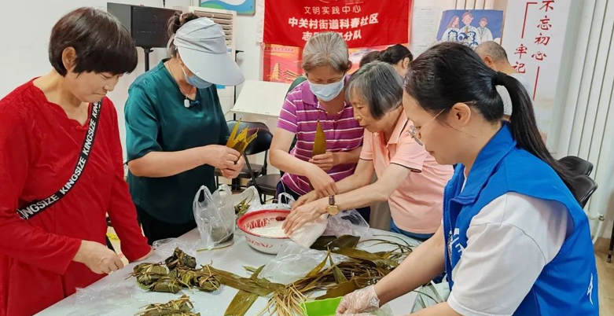

智慧养老互助社

中关村街道科春社区智慧养老互助位于海淀区中关村87楼北侧，在海淀区委社会工委、区民政局的资金支持和技术指导下成立，2022年11月正式面向社区老年居民开放。该智慧养老互助社始终坚持“为老年人解困、为志愿者赋能、为公益组织搭台”的宗旨，由“多功能活动室”、“健康远程问诊区”、“智慧助老设施体验馆”、“共享工具仓”四部分组成。
功能定位
科春社区智慧养老互助社结合社区老年居民居家养老需求，发掘社区公益便民力量，链接社会养老资源，利用现代智能设备服务社区老年居民的方式，开展“智能养老”、“环境适老”、“健康护老”、“生活助老”、“文化慧老”等多维度服务，增进邻里互助，完善现代化社区养老助老服务体系，打造“社区养老助老一家亲”的和谐社区氛围，构建老年人居家养老创新模式。
服务内容
智能养老
烟雾报警紧急呼叫服务平台；智能“魔镜”跳舞机、自动按摩椅体验服务；智能电子血压仪、智能人体感应灯、全屋语音智能控制系统、智慧化功能服装；电动轮椅、爬楼机、智能胸牌、智能安全一体机、红外/微波双鉴人体活动报警器适老设备产品展示等。
环境适老
跌倒风险评估、居家安全评估、阿尔茨海默症症评估等；高龄体验装、适老化样板间体验、适老化设计、适老化改造等。
健康护老
中关村医院和双榆树社区医院义诊、健康管理一体机及健康评估；细胞检测、健康养生、心脑血管预防和康复、阿尔茨海默症预防和护理、预防跌倒与居家安全等健康讲座；就医绿色通道、 陪医就诊、代取药服务、健康远程问诊、口腔义诊、眼科义诊等。
生活助老
链接养老服务资源、便民服务大集、智能手机教学、健脑活动交流、助老经验交流；共享工具仓、理发、家电维修、磨刀磨剪子、修脚剪指甲等公益活动；防诈讲座、法律讲座；家政服务、叫车服务等
文化慧老
举办益智游戏、看老电影、读书会、手工制作、美食节、打印老照片、包粽子、做月饼、健步走等活动；举办丰富多彩的文体活动：舞蹈、音乐沙龙、毛巾操、手指操、心灵话吧；组织园艺疗法、插花、茶艺、收纳和生活美学等休闲活动。